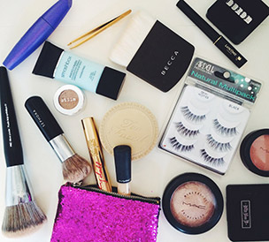

Amber is a great blogger, she blogs about fashion, beauty, fitness and many more topics that can help you stay healthy and looking beautiful!I found Amber on instagram and was directed to her blog site from her many pictures that were posted. Here are some quick ways to accomplish her side braid.
When she buys something new she always makes sure to blog about the quality, price and if it works or not. This is very helpful for girls like us because nothing is more dissapointing then buyings product that is bad.
